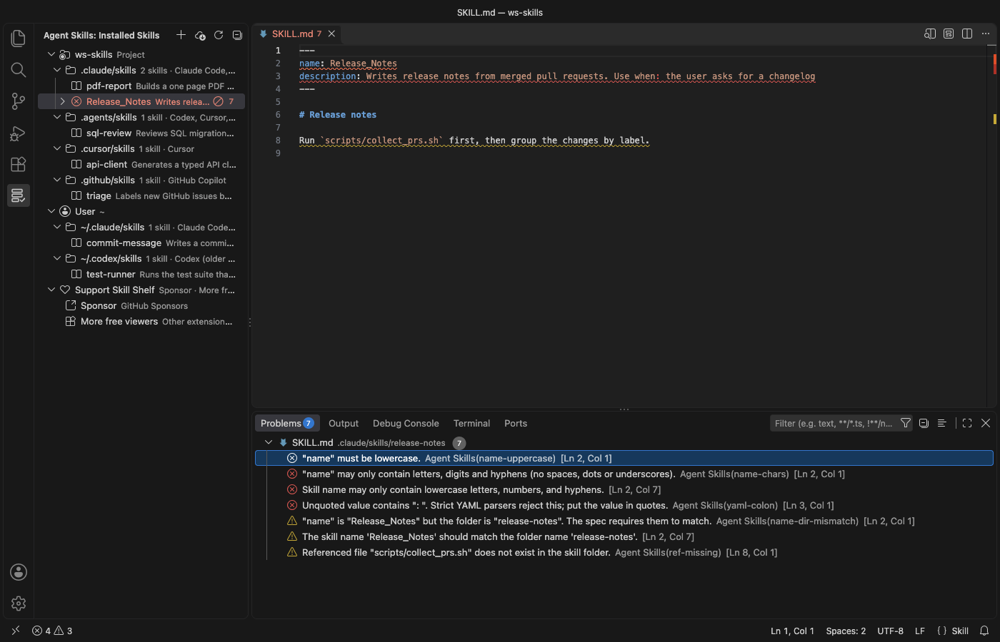
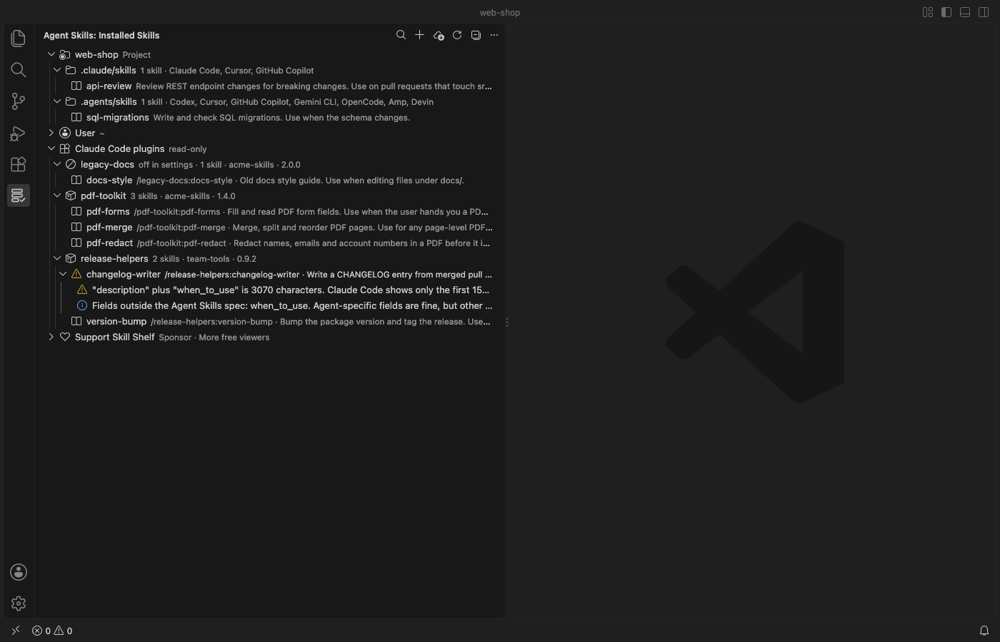
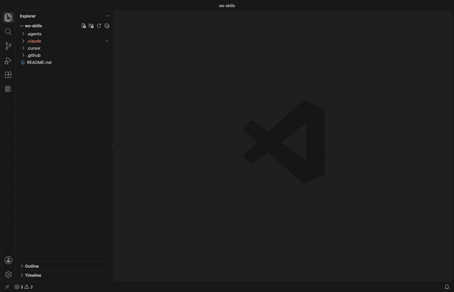
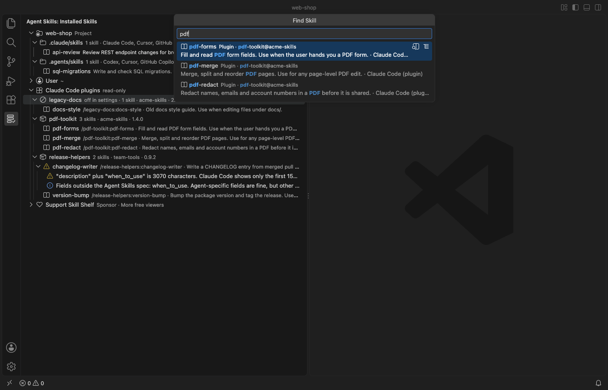

Agent Skills & Claude Skills Manager (Skill Shelf)
Agent Skills & Claude Skills Manager (Skill Shelf), a VS Code extension by Zovo
For people who write skills for Claude Code, Codex, Cursor, Copilot or Windsurf, Skill Shelf shows every SKILL.md those agents can load in one tree, including the skills inside your Claude Code plugins, and flags the ones an agent will choke on.
Free, MIT license. Needs VS Code 1.90.0 or newer. Extension ID zovo.skill-shelf, version 0.4.2.

A real VS Code 1.142 window running this extension on a generated sample project (5 project skills in 4 folders, 2 user skills, one broken SKILL.md). Nothing in it was edited.
- See which skills each agent picks up across 25 known folders and your installed Claude Code plugins, for the project and your home folder, without opening ten dot-folders by hand.
- Catch the mistakes that make an agent skip a skill, like an uppercase
name, an unquotedUse when:in YAML, or a missingscripts/file, with line numbers in the Problems panel. - Turn a skill off, copy it to another agent, create a new one, or install and share
.skillfiles in a click. Nothing is deleted, and it all works offline.

Real VS Code 1.142 window with 3 generated Claude Code plugins and 2 project skills. The User folder is collapsed.
Quick start
- Install Skill Shelf and open a folder. Click the shelf icon in the Activity Bar to see your skills.
- Expand a skill with a red icon and click a problem to jump to that line. Right-click any skill to disable, enable or copy it.

Recorded in the same window. The white arrow is drawn in to show where each click lands.
Questions people ask
Is Agent Skills & Claude Skills Manager (Skill Shelf) free?
Yes. Agent Skills & Claude Skills Manager (Skill Shelf) is free and MIT licensed.
How do I install Agent Skills & Claude Skills Manager (Skill Shelf)?
Click "Install in VS Code" above, or search for zovo.skill-shelf in the Extensions view.
Which folders it reads
The view groups skills under Project (each workspace folder) and User (your home folder). Each folder is labelled with the agents that read it.
| Folder (project) | Folder (user) | Read by |
|---|---|---|
.claude/skills | ~/.claude/skills | Claude Code; Cursor (compatibility folder); GitHub Copilot (project only) |
.agents/skills | ~/.agents/skills | Codex, Cursor, GitHub Copilot, Devin, plus Gemini CLI, OpenCode and Amp in projects |
.cursor/skills | ~/.cursor/skills | Cursor |
.github/skills | ~/.copilot/skills | GitHub Copilot |
.codex/skills | ~/.codex/skills | Cursor (compatibility folder); older Codex versions (user folder) |
.windsurf/skills | ~/.codeium/windsurf/skills | Windsurf |
.opencode/skills | ~/.config/opencode/skills | OpenCode |
.devin/skills | ~/.config/devin/skills | Devin |
| none | ~/.gemini/skills, ~/.config/agents/skills, ~/.config/amp/skills | Gemini CLI, Amp |
| none | $CLAUDE_CONFIG_DIR/skills, $CODEX_HOME/skills (when you set them) | Claude Code, Codex |
.junie/skills, .roo/skills, .kiro/skills | ~/.junie/skills, ~/.roo/skills, ~/.kiro/skills | Junie, Roo Code, Kiro |
These paths come from each agent's documentation and from the skills CLI agent table, checked on 2026-11-05 and again on 2026-11-07. Agents move their folders now and then. Add any folder this list misses with agentSkills.extraLocations, for example a monorepo package's .claude/skills.
Hover a skill to see its full description, its path and its symlink target. Click it to open SKILL.md.
Claude Code plugin skills
Skills that come with a Claude Code plugin don't live in a skills folder you can see. Skill Shelf lists them under "Claude Code plugins", one row per plugin, with the name Claude Code uses to call each one (/plugin-name:skill-name).
- It reads
~/.claude/plugins/installed_plugins.json(or the one in$CLAUDE_CONFIG_DIR) and each plugin'sskills/folder, plus the folders listed under"skills"in its.claude-plugin/plugin.json. - Plugins installed for one project show only when that project is open.
- A plugin that
enabledPluginsturns off in your user, project or local settings is marked "off in settings". - Plugin skills get the same checks, preview, search, copy and export as your own skills. They are read-only: Disable doesn't touch them, because Claude Code owns those folders. Turn a plugin off with
/pluginin Claude Code. - Turn the group off with
agentSkills.showPluginSkills.

Finding a skill
Click the search icon at the top of the view, or run "Agent Skills: Find Skill…". One search box covers every skill in every project and user folder. It matches the name, the description, the folder and the agents that read it, so typing pdf or cursor narrows the list as you type. Each row shows where the skill lives and how many errors and warnings it has.
Press Enter to open SKILL.md. The two buttons on a row open the rendered Markdown preview or select the skill in the tree. "Preview SKILL.md" is also in the right-click menu of every skill.
What it checks
Problems show in the tree. For workspace skills they also go to the Problems panel, with line numbers.
- Frontmatter has to exist and be closed. YAML errors are reported, including the common unquoted
description: Use when: …that strict YAML parsers reject. nameis required, at most 64 characters, lowercase letters, digits and single hyphens, and it should match the folder name.descriptionis required, not empty, and at most 1,024 characters.compatibilityis at most 500 characters, andmetadatais a map of text values.- File references in Markdown links, images and reference definitions, plus
scripts/…,references/…andassets/…paths in the text, must exist in the skill folder. Links that leave the folder (../) get a note. - Claude Code shows only the first 1,536 characters of
descriptionpluswhen_to_usein its skill list. Longer text gets a warning, so the main use case goes first. - It also flags a folder without
SKILL.md, a lowercaseskill.md, an empty body, a body over 500 lines (the spec's guideline) and broken symlinks.
Fields outside the Agent Skills specification, such as Claude Code's disable-model-invocation, show as notes, not errors.
Managing skills
- Disable and Enable move the skill folder to a hidden sibling folder (
.claude/skills/xto.claude/.disabled-skills/x) and back, after a confirmation that shows both paths. No agent scans that folder, and nothing is deleted. - Copy Skill To… copies a skill to any other project or user folder. Copy
~/.claude/skills/pdf-toolsinto this repo's.agents/skillsand Codex and Cursor pick it up too. The copy never overwrites, skips.git, and copies at most 2,000 files or 50 MB. - Create Skill… asks for a folder, a name and a description, then writes a
SKILL.mdthat passes the checks. - Reveal in File Explorer and Open SKILL.md do what they say.
Sharing skills as .skill files
A .skill file is a ZIP archive with the skill folder inside, the format Claude's skill packager writes and claude.ai accepts for upload. A .zip with the same layout works too.
- Export Skill as .skill File… (right-click a skill) writes
<name>/SKILL.mdand the rest of the folder into one file you can send to a teammate or upload to claude.ai. It leaves out the same files Copy leaves out (.git, secret-looking files and symlinks that point outside the skill) and lists them. - Install Skill from .skill or .zip File… (right-click the file in the Explorer, the
…menu of the view, or a skills folder in the tree) shows which skills the file holds, how many files each has and any SKILL.md errors. You choose the folder, so one bundle can go to Claude Code, Codex or Cursor. After a confirmation it writes the files. - Install never overwrites a skill that exists, and if one name clashes nothing is written. Paths that leave the target folder (
../), absolute paths, links, password-protected archives and files over 50 MB are refused. A bundle with several skills lets you pick which ones to install.
Installing skills from GitHub
Install Skills from GitHub… asks for a repository (owner/repo, owner/repo@tag or a https://github.com/… URL), the agents and the scope. Then it shows the exact skills CLI command. Here is one example.
npx -y skills add vercel-labs/agent-skills -a claude-code -a cursor -gSkill Shelf never runs it for you. Copy Command puts it on the clipboard, and Paste in Terminal types it into a new terminal without pressing Enter, so you read it and run it yourself. The tree refreshes when you close that terminal. Pick "Only list the skills in this repository" to preview a repository with --list first.
The repository and skill names are limited to letters, digits and . _ - /, so the command can't carry shell syntax. The skills CLI needs Node.js 22.20 or newer. Skills can include scripts that your agent may run, so read a repository before you install from it.
Safety
- The extension makes no network calls, sends no telemetry and starts no processes.
- It reads only
SKILL.mdfiles, plus the files of a skill you export and the bundle you pick to install. For plugin skills it also readsinstalled_plugins.json, each plugin'splugin.jsonand theenabledPluginsentry of your Claude Code settings files. It never writes to a plugin folder. ASKILL.mdthat is a symlink to a file outside its skill folder is not read. - Copy skips files that usually hold secrets (
.env,.npmrc,*.pem,*.key,id_rsaand similar, plus.sshand.awsfolders) and symlinks that point outside the skill. It lists what it skipped. - Hover text escapes every name, path and description, so a skill can't inject links or images.
- In an untrusted workspace (Restricted Mode) it only lists, finds and checks skills. Disable, enable, copy, create, export and install are off.
Settings
| Setting | Default | Description |
|---|---|---|
agentSkills.extraLocations | [] | Extra skills folders. ~/… and absolute paths are user scope; relative paths are resolved inside each workspace folder. |
agentSkills.showPluginSkills | true | List the skills inside installed Claude Code plugins (read-only). |
agentSkills.showEmptyLocations | false | Also show known folders that don't exist yet. |
agentSkills.diagnostics | workspace | Which problems go to the Problems panel, workspace, all (also user skills) or off. |
agentSkills.install.disableTelemetry | false | Add DISABLE_TELEMETRY=1 to the install command. Per the CLI's README this turns off its anonymous usage data and its security-audit requests. |
agentSkills.askForRating | true | Ask for a Marketplace rating after 3 skill scans that ran without an error, on 2 different days. "Later" asks one more time after 7 days, "No thanks" never again. It never asks after an error. Turn it off with false. |
agentSkills.showSupportLinks | true | Show the collapsed Support Skill Shelf row at the end of the list. Turn it off with false. |
Limits
- It lists skills directly inside a skills folder (
<folder>/<skill>/SKILL.md). Nested.agents/skillsfolders deeper in a monorepo aren't found on their own. Add them withagentSkills.extraLocations. - Codex's admin folder
/etc/codex/skills, Claude Code's managed (enterprise) skills and skills inside plugins for other agents aren't listed. - The YAML parser is built in. It covers what frontmatter uses (maps, lists, quoted and block strings, flow collections) and reports anchors, aliases and tags without resolving them.
SKILL.mdfiles over 1 MB aren't parsed, and a folder shows at most 1,000 skills. The tree refreshes when a workspaceSKILL.mdchanges, when the window regains focus, after its own actions and when you click Refresh. Changes other tools make in user folders show up on the next focus or refresh.- Tested on macOS. The Windows path logic has unit tests, but the extension hasn't been run on Windows.
License
MIT. Not affiliated with Anthropic, OpenAI, Anysphere, GitHub, Microsoft, Vercel or any agent vendor. Product names only say which tools the extension works with.
Guides
Install Agent Skills & Claude Skills Manager (Skill Shelf)
Click the button to open VS Code and install it, or press Ctrl+P (Cmd+P on macOS) in VS Code and run ext install zovo.skill-shelf.
Free, MIT license. Needs VS Code 1.90.0 or newer. Extension ID zovo.skill-shelf, version 0.4.2.
Source code and issues are on GitHub.
Support this work
If this extension saves you time, you can support the work on GitHub Sponsors. Monthly tiers start at $5, and one-time tiers start at $15. Sponsorship is optional, and the tool works the same without it.
Need your format supported?
Open a format request with a sample file, and I reply there whether it can be done. For USD 299 once, through this GitHub Sponsors tier, I add your file format or a missing feature to this extension, with tests, within 7 days.